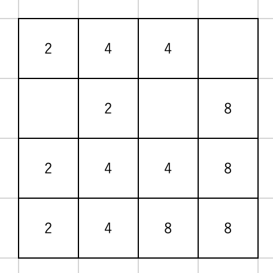
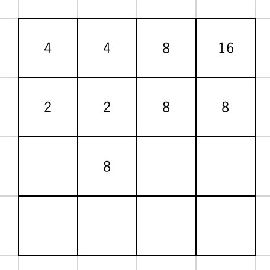
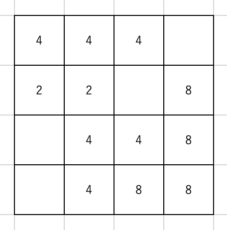
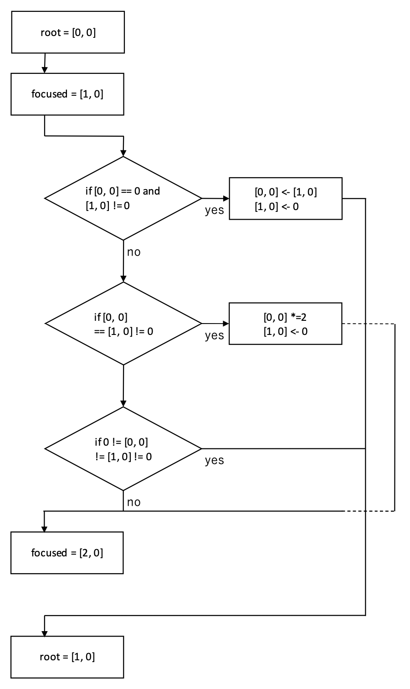
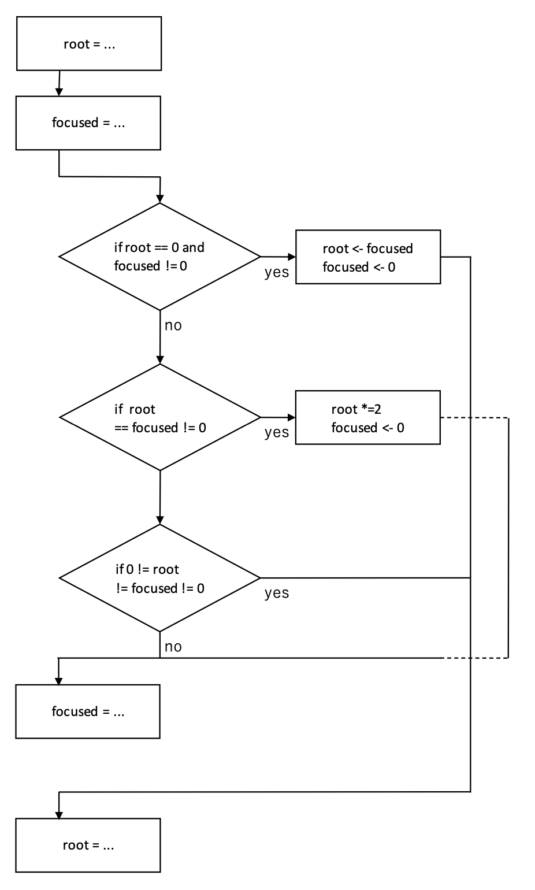
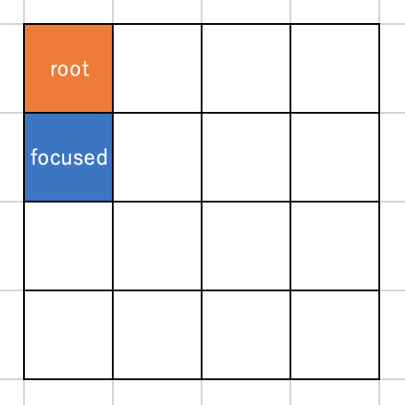
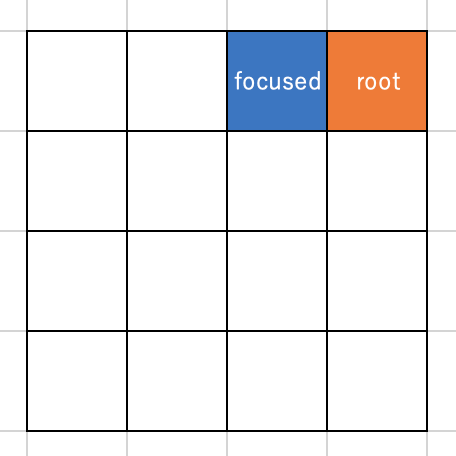

Stage 5 盤面を動かす
みなさま、ようこそ。2048 のプログラミング第 5 ステージ、今回はこのコード全体の中でも一番のミソとなる「盤面の動かし方」をコーディングしていきます。なんてったって 2048 ってのは盤面を動かしてナンボのゲームですからねぇ、ここしっかりしないとちゃんとしたもん作れませんよ。
で、今回はいつもと違ってかなり変なことやります。まず、このコードをちゃんと実行するには main.py を走らせるのですが、我々が最初に扱う move.py は全くもって必要ありません。完全にメモ書きです。でも、これがないと board.py の move メソッドで何をやっているのかほとんどわからなくなると思います。なので、最初は全く無用であることを知りながら、move.py の解説をします。そのあとで board.py に戻って何をやっているかしっかりみてみましょう。
目次
5-1 概観
まずは 2-2 でやったことを思い出してください。重なるところが多くなるので「お前がリンク貼るからしっかり読んできちゃったじゃねえか」という方はもう 5-2 に行ってもらっても結構ですが、リンクすら押す気になれない方のためにここで盤面をどうやって動かすか、その概要をもう一度おさらいしたいと思います。
盤面を動かす向きは上下左右の 4 通り、ここでは簡単のために上を考えようと思います。下図をご覧ください。
これを上に動かすとこうなることはもうわかりますよね？
で、問題はこれをコンピューターにやってもらうかです。まずは一番左上、[row, col] == [0, 0] から着目しましょう。この数字 2 について、まずは下のマス [1, 0] との関係を考えます。このマスには数字がありませんから、[0, 0] のマスは何の影響も受けません。その次に [2, 0] のマスに着目します。同じ 2 がいらっしゃいますね。ということでこいつを [0, 0] にもってきてとりあえずは下のようになるわけです。
ここまでで [0, 0] についてできる操作は終わりました。今度は同じように [1, 0] に注目します。まず [2, 0] つまり真下のマスと比べるわけですが、こいつも EMPTY なので何もできません。次のマス、[3, 0] は 2 が居座っていますよね。盤面を上に動かすとこの 2 が [1, 0] にくるはずですから、この操作でとりあえず下のようになりますよね。
今着目している [3, 0] よりも下にマスはありませんから、第 1 column でこれ以上することはありません。
さて、ここまでの流れをフローチャートにしてみましょうか。まずは簡単のために盤面を上に動かす場合で [0, 0] に着目している状態を考えましょう。
root が数字をもってこようとしているマス、focused がもってきたい数字を探しているマスです。この 2 つのマスには
EMPTY == root == focused == EMPTY：何もしないで次の focused へEMPTY == root != focused != EMPTY：focused → root で次の focused へEMPTY != root == focused != EMPTY：focused → root で次の root へEMPTY != root != focused == EMPTY：何もしないで次の focused へEMPTY != root != focused != EMPTY：何もしないで次の root へ
の 5 パターンがあります。
まず root も focused も EMPTY なら何もできませんから、順当に次のステップへ進みます。
root が EMPTY で focused に数字が入っているとき、その数字は盤面が動くことで root へ来るはずですから、board 上でも focused → root という操作をします。また、この後に同じ数がやってきて 2 倍になること考えられますので、root はそのまま focused を動かします。
root に数字が入っていて focused と同じ場合、その数は root へ移動して足し合わせられますので、root の値を 2 倍することになります。一度数字が足し合わされたらこれ以上別の数を足し合わせることはできませんので、root を移動させます。
root に数字が入っていていて focused が EMPTY の場合、手のうちようがありません。順当に次へ進みます。
root にも focused にも数字が入っていても同じでない場合、この数字を飛び越えて何か操作をすることはできませんので、root を変えます。
ここまでを一般化すると、こういうフローチャートになります。
5-2 ４通りの場合わけをしたメソッド
さて、ここからは実際のコーディングに入ります。5-1 で考えたフローチャートにのっとって上下左右全ての方向についてそれぞれ場合わけし、盤面の挙動をコーディングします。move.py のファイルをご覧ください。
まずいろいろ import 下のちに、Move クラスという形で Board クラスを継承しています。この中で Board_move メソッドを定義します。
引数に方向を表す direction を入れます。3-2 で定義した UP, DOWN, LEFT, RIGHT のいずれかを代入します。またロガーの引数も用意します。
最初のロガーの設定は 3-3 でやったのと全く同じです。その次の ever_moved という変数は「数字が動いたか」を記録しておくものです。例えばこんな場合を考えてみましょう。
この状態から盤面を上に動かそうと思っても、全ての数字が上に上がれませんから無理ですね。こんなとき FAILED をリターンしたいんですよ。そこでこの ever_moved を使うわけです。どこかしら数字が動いたらこの値を True に入れ替えて、最後に ever_moved をリターンする、そんな形を考えています。
まずは上に動かす場合です。まず最初に root を [0, 0] にセットしておきます。root と focused の各 column 各 row は こんな動き方にします。
それを実装しているのが 2 重の for ループおよびその内側の while ループになるわけです。focused は必ず root の一つ下のマスからスタートさせます。盤面の下端まで来たら root を変更します。ただし、5-1 で見た通り、focused が盤面下端まで来なくても root を移動させる場面がありましたよね？そんなのも含めてコーディングしていきましょう。
まず root が EMPTY かつ focused に数字が入っている場合です。このときは focused の数字を root に移すんでした。focused はもぬけの殻になりますので EMPTY にするのを忘れないこと。また、ever_moved も True にしておきましょう。実際に数字を動かしているわけですから。
root と focused に入っている数字が同じで EMPTY ではない場合を考えます。root の値が 2 倍になり、focused はやっぱりもぬけの殻。また 5-1 で確認した通り、この root についてこれ以上手のうちようがないので focused を回す while ループを break します。
これ以外で focused に数字が入っていても、root は操作できませんから while を break しましょう。
最後まできたら focused[ROW] に 1 を足すことをお忘れなく。これで focused が 1 マス下に下がりますね。
同じように下・左右とやっていきましょう。下に盤面を動かす場合を見ていきます。column はどうでもいいのですが、今回 row は下から上がるように見ていかないといけません。つまりこういうこと。

したがって root[ROW] に関する for ループの range の引数が変わります。インデックスは 0 に始まって self.size - 1 までですから、注意して引数を入れてください。
また focused の定義位置も異なります。最初は root の一つ上のマスですから、root[ROW] - 1 という値が出てきますよね。さらに while ループ末尾、focused の位置を変えるのにも注意が必要ですよ。一つ上のマスに上がるんですから、row の値が -1 されるはずですね。
左に動かす場合、右に動かす場合もそれぞれ for 文の挙動には気をつけなければなりません。左へ動かすときは root と focused はこうですね。
つまり focused の column を動かさなければいけないんです。それも COL の値が増える方向にですよ。右に行くほど COL の値が増えるように print メソッドで実装しているんですから。忘れた方は 4-3 でもう一度確認してください。
右に動かす時の root と focused の動きも欲しいんですか？仕方ないですね。
このようにしたいので、COL は size - 1 から減るようにして動かしていきます。最後は 0 を含むように設定してください。
上下左右以外の値が direction に与えられている場合はどうやって動かせばいいかわかりませんから、「失敗」ということで FAILED をリターンします。
そして普通の場合もリターンしましょう。ここで、ever_moved を宣言した理由を思い出してください。動かせる数字がどこにもないかもしれなかったんですよね。ですから一つでも数字が動いていれば True を、数字が一切動いていなければ「失敗」False をリターンします。失敗したときはログでその理由を書いてあげるのがいいでしょう。
さて、ここまでで一通りコーディングはおわりました。バグがないか一応チェックしておきましょう。クラスの外、if __name__ == ... というところがありますよね。ここでは実際のゲームと同じように
- 動かす
- 入れる
- 見せる
のスリーステップを実装しています。このようにして動かしてみて、「あれ？なんかちげーな」となったら今すぐにデバッグへ直行してください。
今回のコード、コピペ部分があまりにも多いですよね。これ、コードとしてはあまりよろしくないので、上下左右 4 方向を全て一つにまとめようと思います。そのため、ここでのデバッグは特に神経注いでください。こんなに具体的なコードでバグが発生するようだと、次に抽象化したら一気に「どこバグってんだ？？」と訳わからんくなりますよ。
5-3 場合わけを統合したメソッド
5-2 では上下左右全ての方向について場合わけを行いました。結果、あまりにもコードに同じ箇所が出てきてしまいましたので、これを全て一括で表そうと思います。ここが一番の難所です。抽象度が一気にバクあがりしますので、一つ一つ丁寧に読んでいってください。
それでは board.py ファイルの Board クラス move メソッドをご用意ください。引数や ever_moved の設定は 5-2 で行ったものと同じです。
さて、5-2 で見ましたが、上下左右の 4 方向で異なるのは root と focused の動きの違いだけです。それ以外は全てコピペでしたよね。ですから我々が本腰を入れて改良しなければいけないのは、for ループの変数設定部分と while ループの focused を動かす部分です。各方向での動きはこうなります。
| direction | root | focused |
|---|---|---|
| UP | row が増える方向 | row が増える方向 |
| DOWN | row が減る方向 | row が減る方向 |
| LEFT | column が増える方向 | column が増える方向 |
| RIGHT | column が減る方向 | column が減る方向 |
UP と DOWN について column はどう動かしても問題ないですし、LEFT と RIGHT について row はどのように動かしても構いません。row と column どちらの for ループを内側にしても大丈夫です。不安な方は一度シミュレーションしてみてください。「確かにこれなら大丈夫だ」と納得してから次へ進んでくださいね。
ではこの root と focused の動きをどのように実装いたしましょうか。ここは上にあげた表の「増える」「減る」というところに注目していただきたいのですが、UP と LEFT, DOWN と RIGHT はそれぞれ一緒に扱えそうですよね。それこそ
- UP と LEFT は row も column も増えるように
- DOWN と RIGHT は row も column も減るように
コーディングすれば良さそうだ。row であれ column であれ、root の値が「増える」というのは 5-2 では
for root[ROW/COL] in range(self.size):
としていましたよね。また「減る」というのは
for root[ROW/COL] in range(self.size - 1, -1, -1):
としました。忘れたら必ず 5-2 に戻って確認してください。
さて、増える場合の range(self.size) って、要は range(0, self.size, +1) を略した形じゃないですか。こうしておいて UP/LEFT と DOWN/RIGHT で range の中身をスイッチのように切り替える、そんな風にしたいと考えています。range(start, stop, step) という形なので、
start = [0, self.size - 1]step = [1, -1]stop = [self.size, -1]
としておいて、UP/LEFT なら前を、DOWN/RIGHT のときは後ろを使うようにします。そのスイッチの役割になっているのが名実ともに switch = (direction in [DOWN, RIGHT]) ですね。switch は bool 型ですが、bool 型は True が 1, False が 0 に対応しますので、switch をそのままリストのインデックスに入れてもらって大丈夫です。結局、
for root[...] in range(start[switch], stop[switch], step[switch]):
となりますね。
さて、focused を操りましょう。ただ、ここでは direction がそれぞれどんな値だったかしっかり思い出してもらわなければいけません。3-2 で定義した通り、
| direction | value |
|---|---|
| UP | [-1, 0] |
| DOWN | [+1, 0] |
| LEFT | [0, -1] |
| RIGHT | [0, +1] |
ですね。これを使ってまずは focused の位置取りをします。具体的な方向で考えてみましょう。盤面を上に動かすときは focused は root のすぐ
下
でしたよね。下に動かすときは root のすぐ上、左に動かすなら root の右、右に動かすなら root の左。つまり focused は root からみて direction とは反対むきに 1 マス進んだところにあるんです。direcrion の向きに進みたいときは [row + direction[ROW], col + direction[COL]] としましたから、逆向きに進むときは [row - direction[ROW], col - direction[COL]] ですね。
while では isInBoard を row にも column にも使って focused が盤面の外に出ていないか検証します。かたっぽでも出てたらループを抜けないとですよ。
ここから先の if による条件分岐は 5-2 と全く変わりません。全てコピペで結構です。
最後に focused を動かします。これも direction とは逆向きに進めなければいけませんよね。したがって focused[ROW], focused[COL] それぞれから direction[ROW], direction[COL] を
引きます。
大丈夫ですよね？さっきと同じ仕組みですよ。わからなくなったら必ず戻って確認すること。
最後に、リターンするものは 5-2 と全く同じです。ever_moved が True つまり数字が一つでも動いていれば「成功」SUCCEEDED を、そうでなければ「失敗」FAILED をリターンです。失敗したときはログでその理由を教えてあげるのがいいでしょう。
次回予告
みなさま、お疲れ様でした。この 2048 のプログラミングで一番の山場、盤面の操作がようやく終わりました。これでプログラムの根幹部分が出来上がりましたので、ここで終わっても構いませんが、あとわずかで結構いいゲームが出来上がりますので、どうぞそこまでお付き合いください。
それと、ここまでのデバッグは抜かりなく。board.py ファイルの一番下で if __name__ == ... とありますが、そこでちゃんと動いているか確認してください。せっかく頑張ってコーディングしたのに、バグが会ったら元も子もないですよ。
次回は Board クラスの残りのメソッドを片付けます。今回に比べればほんとザルみたいなもんですから、気楽にみてってくださいな。